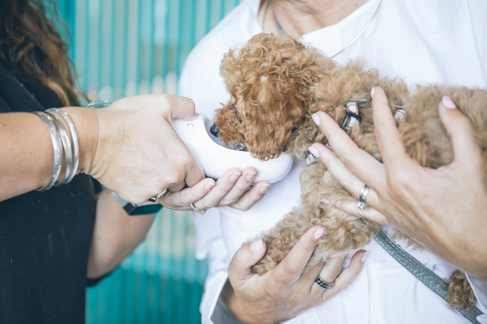

추석 연휴가 시작되는 9월 24일부터 27일까지 휴진합니다.
입원 중인 동물이 있으면 담당 수의사가 연휴 중에도 돌봅니다. 다만 연휴에는 외부로 보낸 검사 결과가 늦게 오기 때문에 연휴 전 마지막 수술 일정은 9월 22일까지만 잡습니다.
처방식과 예방약은 문을 닫기 전날인 9월 23일까지 찾아가 주십시오. 연휴 기간에는 원내 수령이 되지 않습니다.

안내
추석 연휴가 시작되는 9월 24일부터 27일까지 휴진합니다.
입원 중인 동물이 있으면 담당 수의사가 연휴 중에도 돌봅니다. 다만 연휴에는 외부로 보낸 검사 결과가 늦게 오기 때문에 연휴 전 마지막 수술 일정은 9월 22일까지만 잡습니다.
처방식과 예방약은 문을 닫기 전날인 9월 23일까지 찾아가 주십시오. 연휴 기간에는 원내 수령이 되지 않습니다.